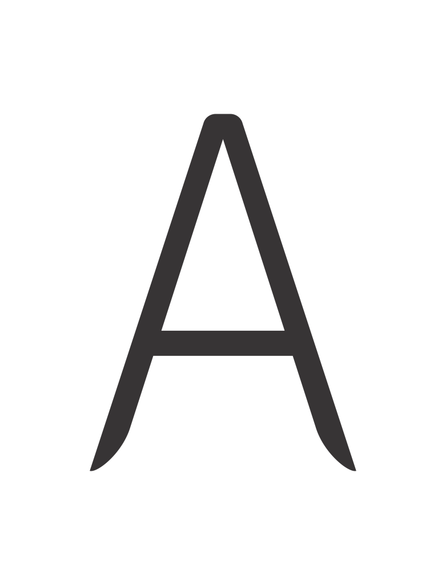
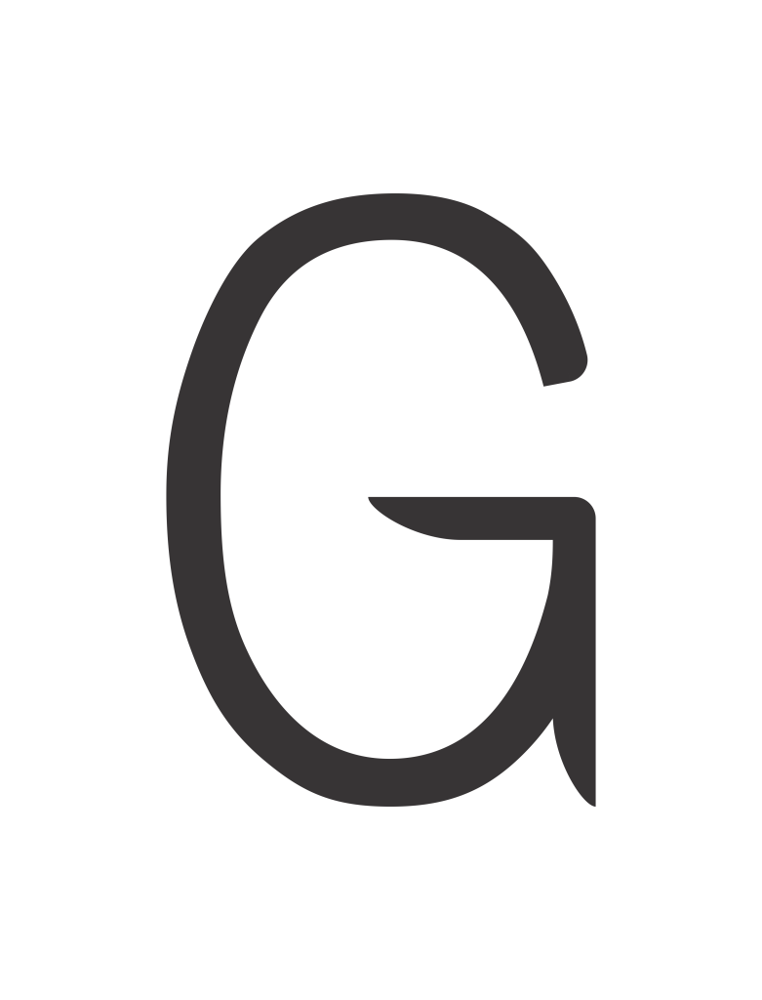
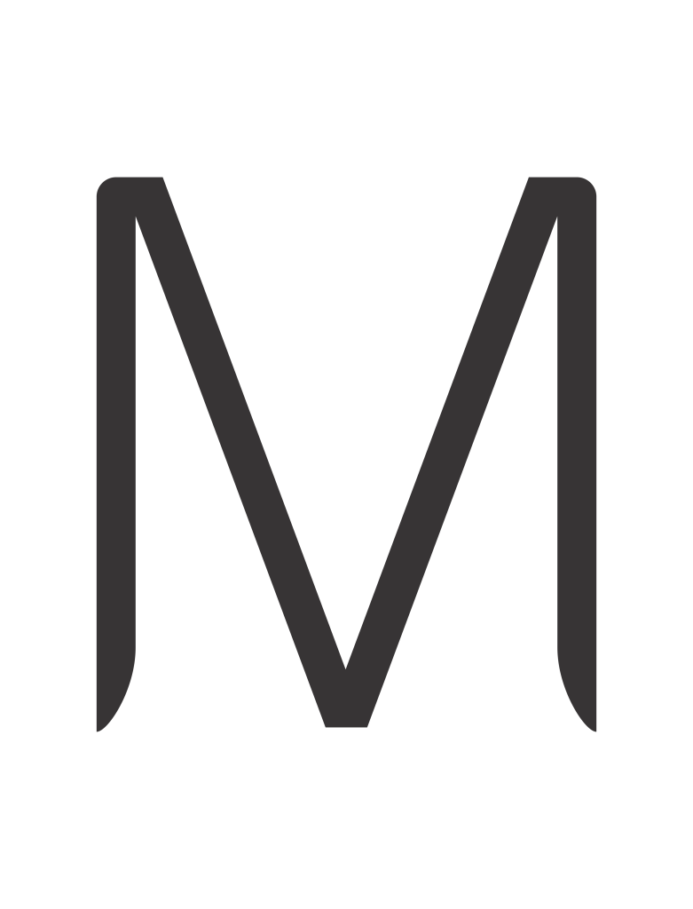
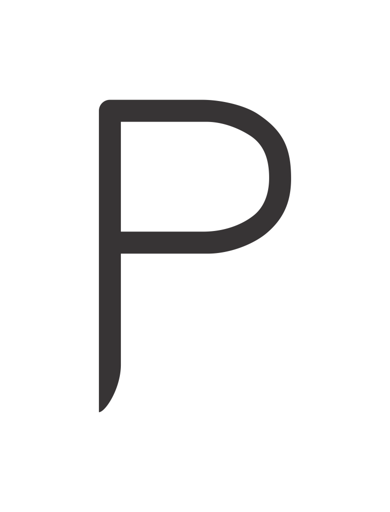
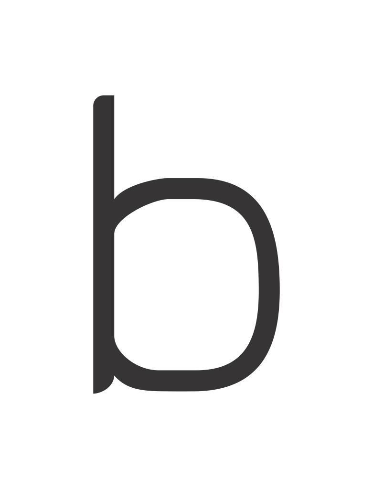
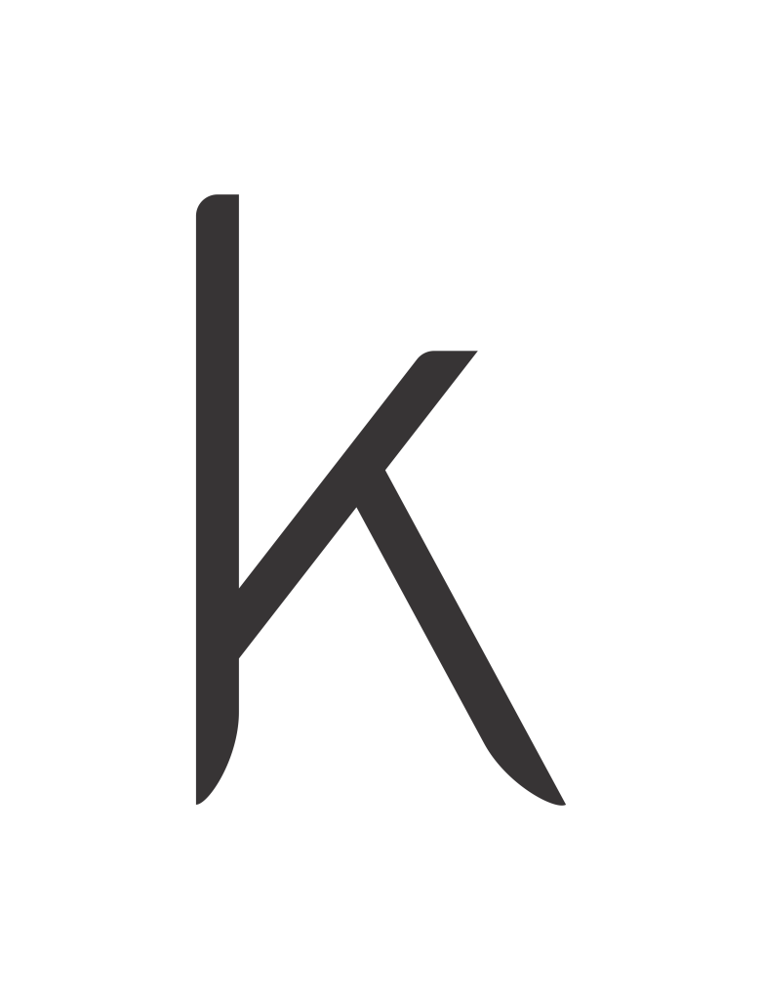

Fonte Temática do Futurismo
This is a collection of glyphs that I developed for a conceptual font about the theme Futurism. My main focus was to capture some of the visual trends in the movement, such as the dominance of straight and curved lines, along with sharp edges, while mantaining visual simplicity. I resorted to these graphic elements to suggest movement and speed.
     